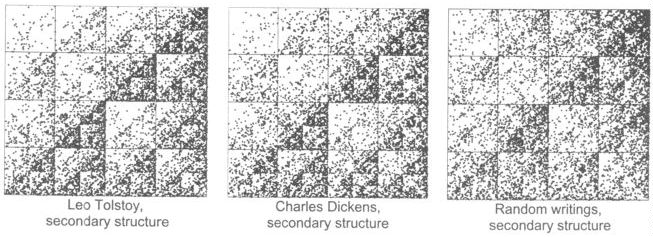

To test how much this pattern really represents the repetition of rhyming, Clark and Tran ran the driven IFS for the secondary structures of the first 10,000 words of War and Peace, of A Tale of Two Cities, and of the same length text made of several randomly selected writings.
All revealed similar patterns.
|  |
Evidently, there are fewer words with secondary structure in bin 3.
To see if this numerical difference alone is responsible for the gasket-like patterns, one could randomize the ordering of the words and drive the IFS with the corresponding secondary sequences.Return to IFS and the Sounds of Literature.